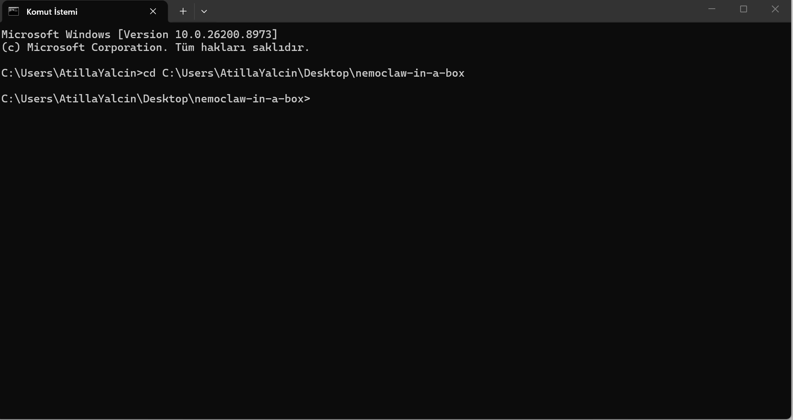

EU AI Act Madde 50 & NVIDIA NemoClaw Uyumlu
Kurumsal AI İçin
Zero-Trust Güvenlik Kalkanı
Şirketinizin veri sınırlarını otonom ajanlara karşı koruyun. 30 saniyede kurulabilen Rust/C++ destekli SIMD motoru ile PII (Kişisel Veri) sızıntılarını milisaniyenin altında engelleyin ve çıktılarınızı kriptografik olarak filigranlayın.

* Açık kaynak (Community) sürümü Docker ve Kubernetes için tamamen ücretsizdir.
< 0.18 ms
< 0.18ms Latency
Python/Regex filtrelerinden 136 kat daha hızlı. C++/Rust SIMD rutinleri ile bellek seviyesinde anlık veri maskeleme (Zero-Copy).
Madde 50
EU AI Act Article 50 Compliant
Otonom LLM çıktılarını kaynağında doğrulayan görünmez HMAC-SHA256 kriptografik etiketleme (Watermarking) mimarisi.
1-Tıkla
Vendor-Agnostic Proxy
Mevcut altyapınızı bozmadan, OpenAI, Anthropic veya yerel Llama modelleri ile API seviyesinde doğrudan "Plug-and-play" Docker/K8s entegrasyonu.